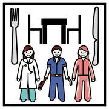
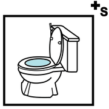
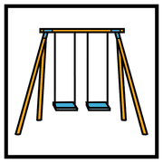
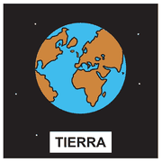

Secondo incontro, modulo 4
La CAA per tutti
Come si introduce la CAA cambia tutto: se resta di un solo bambino segna una differenza, se è di tutta la sezione include.
la scelta
più importante
Due modi di introdurla
 insegnante
insegnante classe
classe bambino
bambino«La tavola di X»
La usa solo un bambino; gli altri non la conoscono. Rischia di diventare un segno di diversità.
I simboli di tutti
Sono visibili a tutti e usati nelle routine. La CAA include e rende la sezione più leggibile per ciascuno.
Dove usarla con tutti

mensa
bagno
cortileclasse- Le routine di gruppo: il cerchio del mattino, il calendario, le canzoncine con i simboli.
- I passaggi da un'attività all'altra: dall'aula al giardino, dal gioco al riordino, dalla mensa al riposo.
- Le regole condivise della sezione, rappresentate con i simboli.
Per chi arriva da lontano

mondo lingua
lingua amico
amicoPer un bambino che non parla ancora italiano il simbolo è un ponte immediato. Non è un aiuto riservato a lui: rende la giornata prevedibile per tutti.
Perché funziona per tutti
 tutti
tutti capire
capire contento
contentoUn ambiente ricco di supporti visivi aiuta i più piccoli che non leggono ancora e chiunque stia vivendo un momento difficile: un trasloco, un lutto, l'arrivo di un fratellino.
La prevedibilità visiva è una risorsa per tutti, non un adattamento per pochi.